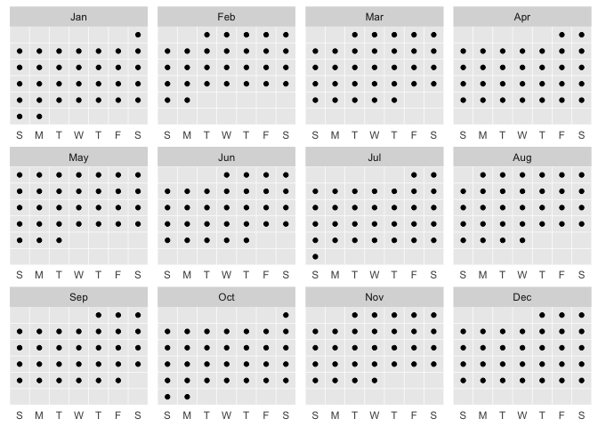
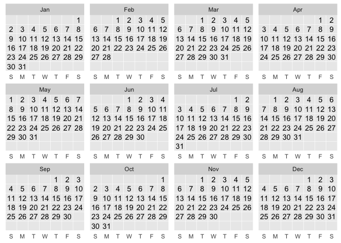
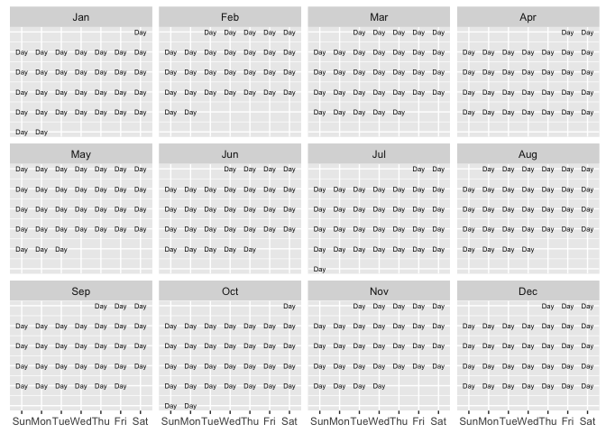
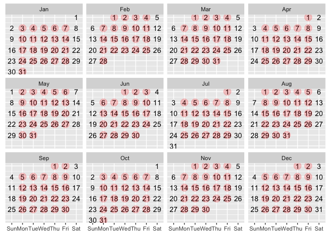
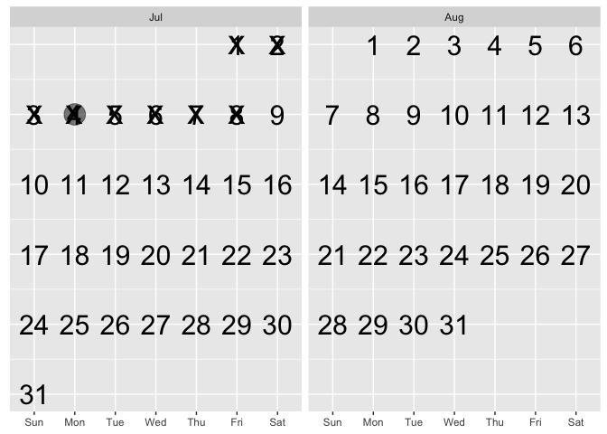

Create grammar-of-graphics calendars.
# install.packages("devtools")
devtools::install_github("EvaMaeRey/ggcalendar")Example
ggcalendar() + # defaults to full calendar of current year
geom_point_calendar() # default to dates declared in ggcalendar
ggcalendar() +
geom_text_calendar() # defaults to day of month in ggcalendar
ggcalendar() +
geom_text_calendar(label = "Day", # override default
size = 2)
ggcalendar() +
geom_text_calendar() +
geom_point_calendar(data = . %>% filter(wday(date) %in% 2:6),
alpha = .2,
size = 5,
color = "red")
## basic example code
c("2022-03-19", "2022-04-09", "2022-05-07", "2022-06-11", "2022-07-16") %>%
tibble(date = . ) %>%
mutate(date = date %>% as_date) %>%
mutate(future = Sys.Date() < date) ->
events
ggcalendar() +
geom_text_calendar() +
geom_point_calendar(data = events,
aes(color = future),
size = 8,
alpha = .5) +
labs(title = "nu2ggplot2X^2sion")
## basic example code
ggcalendar::return_dates_month(month = "2022-07") %>%
head
#> date
#> 1 2022-07-01
#> 2 2022-07-02
#> 3 2022-07-03
#> 4 2022-07-04
#> 5 2022-07-05
#> 6 2022-07-06
ggcalendar(ggcalendar::return_dates_interval(start_date = "2022-07-01", end_date = "2022-08-31")) +
geom_text_calendar(size = 8) +
geom_point_calendar(data = . %>% filter(date == "2022-07-04"),
size = 8,
alpha = .5) +
geom_point_calendar(data = . %>% filter(date < Sys.Date()),
size = 10, shape = "x") # NYC flights
Airline on-time data for all flights departing NYC in 2013. Also includes useful ‘metadata’ on airlines, airports, weather, and planes.
Data inspiration: https://twitter.com/rappa753/status/1545729747774308354 @rappa753
# example
nycflights13::flights %>%
ungroup() %>%
mutate(date = as.Date(time_hour)) %>%
filter(year(date) == 2013) %>%
count(date) %>%
ggcalendar() +
geom_point_calendar(data = . %>% tibble(), aes(size = n,
color = n),
alpha = .7, show.legend = F) +
scale_color_viridis_c(option = "inferno", direction = 1) +
scale_size(range = c(3,8)) +
geom_text_calendar(aes(label = n), size = 2) +
NULLA little on the internals, the compute group function or thank you lubridate!
compute_group_calendar_script <- readLines("./R/compute_group_calendar.R")#' Title
#'
#' @param data
#' @param scales
#'
#' @return
#' @export
#'
#' @examples
#' return_dates_year(1999) %>%
#' head() %>%
#' compute_group_calendar()
#'
compute_group_calendar <- function(data, scales){
data %>%
dplyr::mutate(num_day_of_week = lubridate::wday(.data$date)) %>%
dplyr::mutate(day_of_week = lubridate::wday(.data$date, label = TRUE, abbr = TRUE)) %>%
dplyr::mutate(week_of_month = (- lubridate::wday(.data$date) + lubridate::day(.data$date)) %/% 7 + 1 +
ifelse(lubridate::wday(lubridate::floor_date(lubridate::as_date(.data$date), "month")) == 1, -1, 0)
) %>%
dplyr::mutate(date_of_month = lubridate::day(.data$date)) %>%
dplyr::mutate(which_year = lubridate::year(.data$date) - 2018) %>%
dplyr::mutate(month = lubridate::month(.data$date, abbr = TRUE, label = TRUE)) %>%
dplyr::mutate(hour = lubridate::hour(.data$date)) %>%
dplyr::mutate(academic_year = lubridate::year(.data$date) +
ifelse(lubridate::month(date) >
6, 1, 0)) %>%
dplyr::mutate(academic_month = .data$month %>%
factor(levels = c("Jul", "Aug", "Sep", "Oct", "Nov", "Dec",
"Jan", "Feb", "Mar", "Apr", "May", "Jun")))
}
StatCalendar <- ggplot2::ggproto(`_class` = "StatCalendar",
`_inherit` = ggplot2::Stat,
required_aes = c("date"),
compute_group = compute_group_calendar,
default_aes = ggplot2::aes(x = ggplot2::after_stat(day_of_week),
y = ggplot2::after_stat(week_of_month),
label = ggplot2::after_stat(date_of_month)))# compute function
return_dates_year(1999) %>%
head() %>%
compute_group_calendar()
#> date num_day_of_week day_of_week week_of_month date_of_month which_year
#> 1 1999-01-01 6 Fri 0 1 -19
#> 2 1999-01-02 7 Sat 0 2 -19
#> 3 1999-01-03 1 Sun 1 3 -19
#> 4 1999-01-04 2 Mon 1 4 -19
#> 5 1999-01-05 3 Tue 1 5 -19
#> 6 1999-01-06 4 Wed 1 6 -19
#> month hour academic_year academic_month
#> 1 Jan 0 1999 Jan
#> 2 Jan 0 1999 Jan
#> 3 Jan 0 1999 Jan
#> 4 Jan 0 1999 Jan
#> 5 Jan 0 1999 Jan
#> 6 Jan 0 1999 JanHow used in geom_point_calendar… default aes
geom_point_calendar_script <- readLines("./R/geom_point_calendar.R")
#' Title
#'
#' @param mapping
#' @param data
#' @param position
#' @param na.rm
#' @param show.legend
#' @param inherit.aes
#' @param ...
#'
#' @return
#' @export
#'
#' @examples
#' library(lubridate)
#' library(tidyverse)
#'
#' data.frame(date = as.Date("2020-01-01") + days(0:365)) %>%
#' ggplot() +
#' aes(date = date) +
#' aes(color = date) +
#' geom_point_calendar() +
#' facet_wrap(~month(date, label = TRUE, abbr = TRUE))
#'
#' data.frame(date = as.Date("2020-01-01") + days(0:400)) %>%
#' ggplot() +
#' aes(date = date) +
#' geom_point_calendar() +
#' facet_grid(year(date) ~ month(date, label = TRUE, abbr = TRUE))
geom_point_calendar <- function(mapping = NULL, data = NULL,
position = "identity", na.rm = FALSE,
show.legend = NA,
inherit.aes = TRUE, ...) {
ggplot2::layer(
stat = StatCalendar, # proto object from Step 2
geom = ggplot2::GeomPoint, # inherit other behavior
data = data,
mapping = mapping,
position = position,
show.legend = show.legend,
inherit.aes = inherit.aes,
params = list(na.rm = na.rm, ...)
)
}